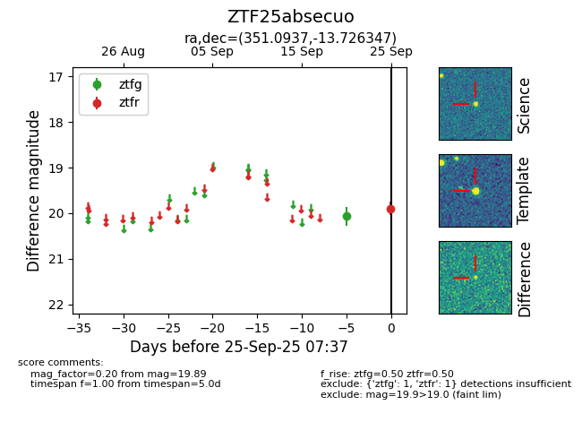

FINK: ZTF25absecuo
Lasair: ZTF25absecuo
ALeRCE: ZTF25absecuo
ZTF25absecuo (ztf,fink)
equatorial (ra, dec) = (351.0937,-13.72635)
galactic (l, b) = (61.9958,-65.66205)

last ztfg=20.06, ztfr=19.89
1 ztfg, 1 ztfr detections